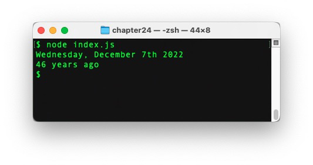

Discover Node.js
In this chapter, you'll discover how to create JavaScript applications outside the browser thanks to a technology called Node.js.
Introducing Node.js
A bit of history
To understand what Node.js (or Node for short) is, we have to travel back in time to the 2000's. As JavaScript was becoming increasingly important for improving the user experience on the web, web browser designers spent a considerable amount of resources on executing JS code as fast as possible. In particular, the Chrome JavaScript engine, codenamed V8, became open source in 2008 and was a huge step forward in general performance and optimization.

The core idea behind Node.js was simple yet visionary: since the V8 engine is so good at executing code, why not leverage its power to create efficient JavaScript applications outside the browser? And thus Node.js was born in 2009, originally written by Ryan Dahl. Its project quickly became very popular and Node is now one of the top technologies for building apps and creating APIs with JavaScript.

Node also made it easier for developers to publish, share and reuse code. Today, hundreds of thousands of ready-to-use JavaScript libraries, called packages, are available and easy to integrate in any Node-based project (more on that later). This rich ecosystem is one of Node's greatest strengths.
A first example
Note
This chapter assumes a working Node environnement. Refer to the introduction for setting one up.
The simplest possible Node program is as follows.
As you see, the console.log() command is also available in Node. Just like in a web browser, it outputs the value passed as parameter to the console. Assuming this code is saved into a file named hello.js, here's how to execute it through Node in a terminal.

An in-depth study of the Node platform is out of this book's scope. Let's focus on two of its defining features: modules and packages.
Node.js modules
The benefits of modularity
The general idea behind modules is pretty straightforward and similar to the one behind functions. Instead of writing all the code in one place, thus creating a monolithic application, it's often better to split the functionalities into smaller, loosely coupled parts. Each part should focus on a specific task, making it far easier to understand and reuse. The general application's behavior results from the interactions between these building blocks.
These smaller parts are sometimes referred to as components in other environments. In Node, they are called modules and can come under different forms. The general definition of a module is: anything that can be loaded using Node's require() function. The Node.js platform adheres to the CommonJS module format.
Creating a module
The simplest form of module is a single JavaScript file, containing special commands to export specific pieces of code. The rest of the code is private to the module and won’t be visible outside of it.
For example, a greetings.js module could contain the following code.
// Create three functions
const sayHello = name => `Hello, ${name}`;
const flatter = () => `Look how gorgeous you are today!`;
const sayGoodbye = name => `Goodbye, ${name}`;
// Export two of them
module.exports.sayHello = sayHello;
module.exports.flatter = flatter;
In Node, functions can be exported (made accessible outside) by specifying additional properties on the special module.exports object. Here, two functions are exported under the names sayHello and flatter. The third one is not exported.
This module could have been written in a slightly more concise way by directly defining the functions as properties of the module.exports object.
// Create and export two functions
module.exports.sayHello = name => `Hello, ${name}`;
module.exports.flatter = () => `Look how gorgeous you are today!`;
// Create a non-exported function
const sayGoodbye = name => `Goodbye, ${name}`;
Loading a module
Assuming both files are located in the same directory, another JavaScript file could load the previously created module by using the require() function provided by Node.js.
// Load the module "greetings.js"
const greetings = require("./greetings.js");
// Use exported functions
console.log(greetings.sayHello("Baptiste")); // "Hello, Baptiste"
console.log(greetings.flatter()); // "Look how gorgeous you are today!"
console.log(greetings.sayGoodbye("Baptiste")); // Error: sayGoodbye doesn’t exist
The parameter passed to require() identifies the module to load. Here, the "./" substring at the beginning indicates a relative path: the module should be searched for in the same directory as the file that loads it.
The result of the call to require() is an object, named greetings here. This object references the value of the module.exports object defined inside the module. Thus, the greetings object has two functions sayHello and flatter as properties. Trying to access its non-existent sayGoodbye property triggers an error during execution.
Tip
Giving the object resulting from a call to require() the same name as the loaded module's name, through not mandatory, is a common practice.
Exporting only a specific object
Numerous modules in the Node.js ecosystem export only a single object aggregating all of the module's functionality. To do so, they reassign the module.exports object instead of adding properties to it.
For example, check out how the following module calculator.js is defined.
// Declare a factory function that returns an object literal
const createCalc = () => {
// The returned object has 4 methods
return {
add(x, y) {
return x + y;
},
subtract(x, y) {
return x - y;
},
multiply(x, y) {
return x * y;
},
divide(x, y) {
return x / y;
}
};
};
// Export the factory function
module.exports = createCalc;
In this module, the only exported element is a function that returns an object literal. Using it in another file (located in the same folder) is as follows.
const calculator = require("./calculator.js");
// Create an object by calling the exported function of this module
const calc = calculator();
// Use the object's methods
console.log(`2 + 3 = ${calc.add(2, 3)}`); // "2 + 3 = 5"
The result of the call to require() is a function stored in the calculator variable, referencing the createCalc() function. Calling this function returns an object with several methods, which can be subsequently used.
Exporting only a class
When you want a module to only export a specific class, you can also reassign the module.exports object.
Here is a module user.js that defines and exports a User class.
// Export a User class
module.exports = class User {
constructor(firstName, lastName) {
this.firstName = firstName;
this.lastName = lastName;
// Create user login by combining first letter of first name + last name
this.login = (firstName[0] + lastName).toLowerCase();
}
describe() {
return `${this.firstName} ${this.lastName} (login: ${this.login})`;
}
};
Here's how to use this class in another file (located in the same folder).
// Notice the first uppercase letter, since User is a class
const User = require("./user.js");
// Create an object from this class
const johnDoe = new User("John", "Doe");
// Use the created object
console.log(johnDoe.describe());

Node.js packages
The Node platform provides a way to structure an application under the form of a package.
Anatomy of a package
Technically, a package is a folder containing the following elements:
- A
package.jsonfile which describes the application and its dependencies. - A entry point into the application, defaulting to the
index.jsfile. - A
node_modules/subfolder, which is the default place where Node looks for modules to be loaded into the application. - All the other files forming the source code of the application.
The package.json file
This JSON file describes the application and its dependencies: you can think of it as the app's ID document. It has a well-defined format consisting of many fields, most of them optional. The two mandatory fields are:
name(all lowercase letters without dots, underscores and any non-URL safe character in it).version(following the semantic versioning format - more on that later).
Below is an example of a typical package.json file.
{
"name": "thejsway-node-example",
"version": "1.0.0",
"description": "Node example for the book \"The JavaScript Way\"",
"scripts": {
"start": "node index.js"
},
"dependencies": {
"semver": "^7.3.8",
"moment": "^2.29.4"
},
"keywords": [
"javascript",
"node",
"thejsway"
],
"author": "Baptiste Pesquet"
}
Semantic versioning
Node packages are versioned using a format called semantic versioning. A version number is a three-digit string of the form MAJOR.MINOR.PATCH (example : 2.29.4).
Here are the rules for defining a version number:
- The very first version should be
1.0.0. - Bug fixes and minor changes should increment the
PATCHdigit. - New features added in a backwards-compatible way should increment the
MINORdigit. - Breaking changes should increment the
MAJORdigit.
These strict rules exist to facilitate the management of dependencies between packages.
Dependencies
In the package.json file definition, the dependencies field is used to declared the external packages needed by the current package. Each dependency is created with the package name followed by a version range. This version range specifies the package versions that are acceptable to use.
There are many ways to define a version range. The most commonly used ones are:
- Targeting a very specific version. Example:
2.18.1. - Using the
~operator to allow patch-level changes. For example, the~2.18.1version range accepts version2.18.7, but not2.19.0nor3.0.0. - Using the
^operator to allow changes that do not modify the left-most non-zero digit in the version. Examples: - The
^2.18.1version range accepts versions2.18.7and2.19.0, but not3.0.0. - The
^0.2.3version range accepts version0.2.5but not0.3.0nor1.0.0.
Fine-tuning the targeted versions of external packages though version ranges helps limiting the risk of breaking the application apart when updating its dependencies.
Package management with npm or yarn
Soon after the creation of Node.js, it became apparent that something was missing to orchestrate code sharing and reuse through modules. So npm (Node Package Manager) was born in 2010. It is still the standard package manager for the Node ecosystem, even if it is being challenged by yarn, a more recent alternative. It consists of a command line client, also called npm, and an online database of public packages, called the npm registry and accessed by the client.

Over 477,000 packages are now available on the registry, ready to reuse and covering various needs. This makes npm the largest ecosystem of open source libraries in the world.
The npm client is used by typing commands in a terminal open in the package's folder. It offers numerous possibilities for managing packages. Let's study two of the most important ones.
Installing dependencies
To install all the dependencies of a package, you type the following npm command.
This will read the package.json file, look for the packages satisfying the version ranges declared in the dependencies field, and download and install them (and their own dependencies) in the node_modules/ subfolder.
Adding a new dependency
There are two ways for adding a new dependency to a package. The first one is to manually edit the package.json to declare the dependency and its associated version range. The next step is to run the following npm command.
This will update all the packages listed to the latest version respecting their version range, and install missing packages.
The other way is to run the following command.
This command will fetch a specific package from the registry, download it in the node/modules/ subfolder and (since npm 5) update the package.json file to add it as a new dependency. The <package-id> parameter is usually the dependency's package name.
Using a dependency
Once external packages have been installed in node_modules/, the application can load them as modules with the require() function.
For example, the npm registry has a semver package that handles semantic versioning. Assuming this package has been installed as a dependency, it can be used to perform manual version range checks.
// Load the npm semver package as a module
// Notice the omission of "./" since the package was installed in node_modules/
const semver = require("semver");
// Check if specific versions satisfy a range
console.log(semver.satisfies("2.19.0", "^2.18.1")); // true
console.log(semver.satisfies("3.0.0", "^2.18.5")); // false
Relationship between packages and modules
Let's recap what you learned so far:
- A module is anything that can be loaded with
require(). - A package is a Node application described by a
package.jsonfile.
A package used in another Node application is loaded with require(), making it a module. To be loaded as a module, a package must contain an index.js file or a main field in package.json defining a specific entry point.
Some packages only contain an executable command and thus cannot be loaded as modules. On the other hand, a single JavaScript file loaded with require() is a module but not a package, since it doesn’t have a package.json file.
Check out the npm documentation for more details on this aspect.
Note
ES modules is a newer syntax for defining and loading modules, available in recent (v15.3+) versions of Node.js. It should eventually replace CommonJS as the standard way.
TL;DR
-
Node.js (or simply Node) is a platform built on Chrome's JavaScript engine (V8) to create JavaScript applications outside the browser.
-
Node emphasizes modularity: instead of being monolithic, applications are designed as a set of small, focused modules working together to achieve the desired behavior.
-
Node adheres to the CommonJS module format. It provides a
require()for loading a module. -
Inside a module, the
module.exportsobject is used to export pieces of code. You can add properties to it to export element. You can also reassignmodule.exportsto export only a specific element. -
Node provides a way to structure an application under the form of a package. A package is a folder containing an application described by a
package.jsonfile. The default entry point of a package is theindex.jsfile. -
Package versions are defined using the semantic versioning format: a three-digit string of the form
MAJOR.MINOR.PATCH. This format facilitates the management of dependencies between packages. -
npm (Node Package Manager) is the standard package manager for the Node ecosystem. It consists of a command line client and an online registry of public packages accessed by the client. This registry is the largest ecosystem of open source libraries in the world.
-
The main npm commands are
npm install(to install all the dependencies of a package or adding a new one) andnpm update(to update all the packages and install missing ones according topackage.json). -
Once installed through npm, packages defined as dependencies are stored in the
node_modules/subfolder and can be loaded as modules usingrequire(). -
Some packages (containing only executable files or no entry point) cannot be loaded as modules. Some modules (single JavaScript files) are not packages.
Coding time!
Circles again
Create a circle.js module exporting two functions circumference() and area(), each taking the circle radius as a parameter.
Load this module in a index.js file and test the two functions.

Accounting
Create a accounting.js module exporting an Account class containing:
- a constructor accepting an
ownerparameter; - a
credit()method for crediting a sum of money on the account; - a
describe()method for describing the account.
Load this module in a index.js file and test the class.
// TODO: load the "accounting.js" module
// Create object from the exported class
const myAccount = new Account("Jeff");
myAccount.credit(150);
console.log(myAccount.describe());

Playing with dates
The npm package moment is very popular for managing dates and times.
Create a Node package and install the current moment version as a dependency. Then, load this package and use it to:
- Display the current date.
- Compute the number of years since 1976, November 26th.

Tip
Use the moment documentation to discover how to use this package.